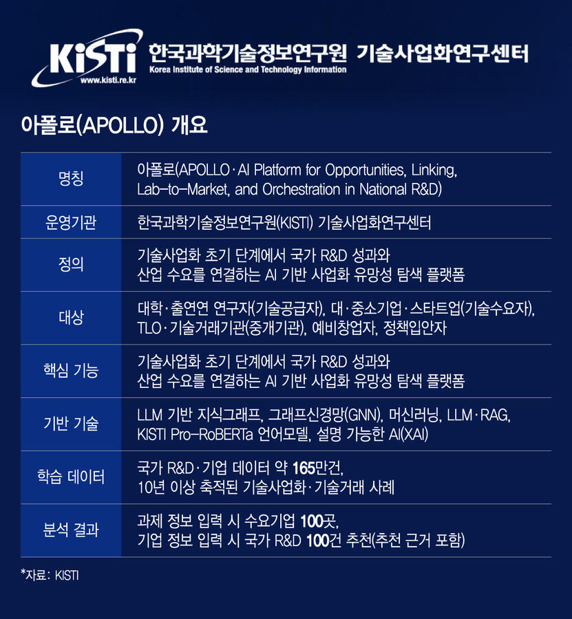
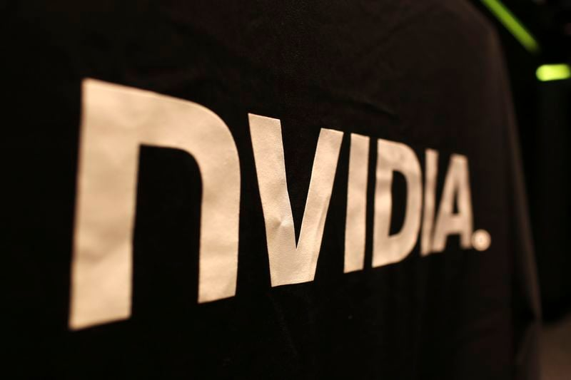
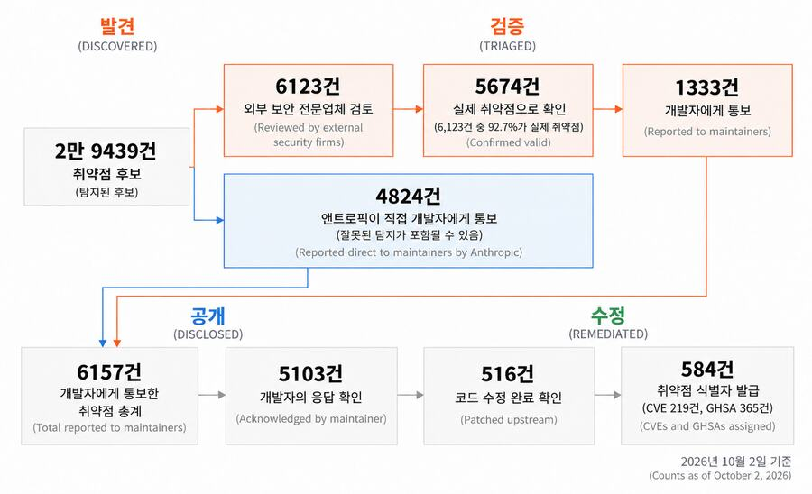
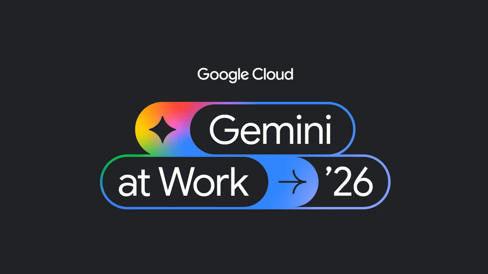
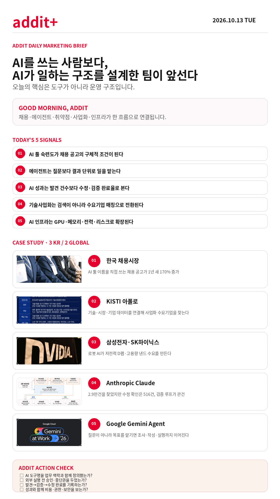

addit+
2026.10.13 Tue
ONLINE · SNS MARKETING BRIEFING
AI를 쓰는 사람보다,
AI가 일하는 구조를 설계한 팀이 앞선다
도구 사용은 채용 조건이 되고, 에이전트는 결과 단위로 움직이며, 검증·권한·비용·인프라가 운영의 일부가 됩니다.
GOOD MORNING, ADDIT
오늘은 모델 이름보다 AI가 실제 업무에 어떻게 연결되고, 누가 승인하며, 어떤 기준으로 수정·검증되는지를 확인합니다.
오늘은 모델 이름보다 AI가 실제 업무에 어떻게 연결되고, 누가 승인하며, 어떤 기준으로 수정·검증되는지를 확인합니다.
TODAY'S 5 SIGNALS
AI가 일하는 구조를 설계할 때 보는 다섯 가지
에이전트는 질문보다 결과 단위로 일을 맡는다
AI 성과는 발견 건수보다 수정·검증 완료율로 본다
기술사업화는 검색이 아니라 수요기업 매칭으로 전환된다
AI 인프라는 GPU·메모리·전력·리스크로 확장된다
CASE STUDY · 3 KR / 2 GLOBAL
AI를 연결하는 방식이 바뀐 다섯 사례
KR · 한국경제이미지 출처: 한국경제 원문
한국 채용시장 — AI 툴을 이름으로 요구하는 공고
기업이 AI 활용 능력을 추상어가 아니라 Claude·ChatGPT·Gemini 같은 업무 도구명으로 구체화하고 있습니다.
- AI 툴 명시 채용공고 1년 새 170% 증가
- Claude 770%·Gemini 500% 증가, AI 역량 키워드 235% 증가
한국경제 원문 보기 →

KR · 유니콘팩토리이미지 출처: 유니콘팩토리 원문KISTI 아폴로 — 기술과 수요기업을 연결하는 사업화 AI
국가 R&D·기업·시장 데이터를 분석해 연구기술을 실제 사업화 상대와 연결하는 특화 AI입니다.
- 기술을 필요로 할 가능성이 높은 수요기업 100곳 추천
- 아폴로 2.0 기업 DB 48만개→190만개 확대 계획
유니콘팩토리 원문 보기 →

KR · EBN/Investing.com이미지 출처: Investing.com 원문 · Reuters삼성전자·SK하이닉스 — 로봇 AI가 만드는 메모리 수요
AI 데이터센터 이후 휴머노이드 로봇이 저전력 D램과 고용량 낸드플래시의 새 수요처로 부상합니다.
- 2030년 로봇용 D램 수요 2026년 대비 약 20배 전망
- 로봇 1대당 D램 19GB→39GB 확대 전망
Investing.com 원문 보기 →

GLOBAL · IT조선이미지 출처: IT조선 원문Anthropic Claude — 발견과 수정 사이의 검증 루프
AI가 찾는 속도와 개발 조직이 실제로 패치하는 속도 사이에 운영 병목이 드러났습니다.
- 취약점 후보 2만9,439건, 개발자 통보 6,157건
- 실제 수정 확인 516건, 외부 검토에서 5,674건이 실제 문제로 확인
IT조선 원문 보기 →

GLOBAL · 스타트업레시피이미지 출처: 스타트업레시피 원문Google Gemini Agent — 질문이 아니라 결과를 위임하는 업무 방식
조사·자료 작성·이미지·코드를 하나의 목표 단위로 연결하고, 업무 맥락과 권한을 관리합니다.
- Google Workspace와 외부 서비스 연동 지원
- 클라우드 지속 실행·접근권한·지출 한도 관리, 제한적 미리보기
스타트업레시피 원문 보기 →
PLATFORM WATCH
원고에서 함께 확인한 운영 변화
ChatGPT-6·맞춤형 화면
무료 이용자 확대와 질문별 화면 변화가 AI 서비스 경험의 개인화 흐름을 보여줍니다.
YTN 원문 →보이지 않는 워터마크
생성물 표시와 AI법 대응은 결과물의 제작 방식 공개 기준으로 확장됩니다.
투데이경제 원문 →Claude 이용정책 논쟁
AI 서비스의 이용정책도 기능 사용을 넘어 모델에 대한 장기간 학대 금지까지 다루기 시작했습니다.
Vietnam.vn 원문 →GPU에서 금융 리스크로
AI 인프라 투자 판단은 GPU 성능뿐 아니라 수명·회수·수요 변동을 함께 계산해야 합니다.
한국경제 원문 →
ADDIT INSIGHT
AI 도입의 다음 경쟁력은 모델 선택이 아니라 목표·권한·검증·비용·중단 조건을 함께 설계하는 운영 구조입니다.
ACTION CHECK
- AI 도구명을 실제 업무 맥락과 함께 정의했는가?
- 외부 실행 전 사람 승인과 중단권을 두었는가?
- 발견→검증→수정 완료를 기록하는가?
- 성과와 함께 비용·권한·보안을 보는가?
- AI 사용 방식과 검증 상태를 표시하는가?